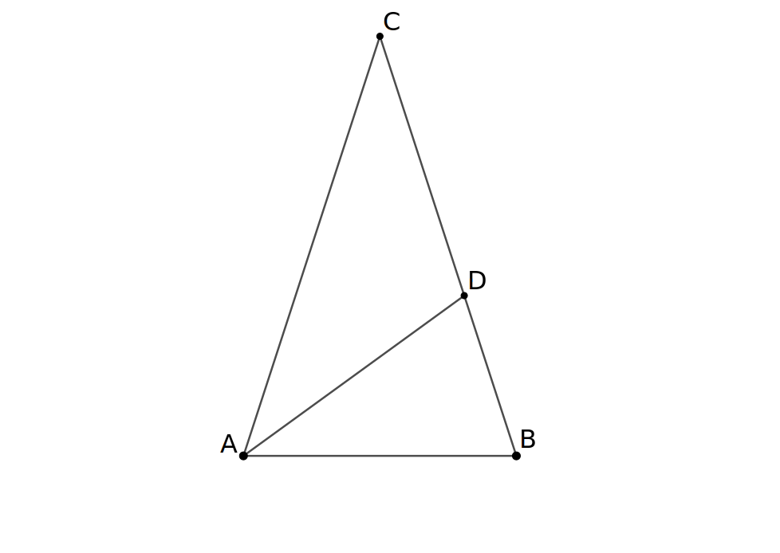

这是伽罗瓦群的计算的第二部分. 讨论一些特殊方程的伽罗瓦群.
纯粹方程
设 \(F\) 是域. 将方程 \(g(x) = x^n - a = 0\, (0 \ne a \in F, n \ge 2)\) 称为 纯粹方程. 这类方程的伽罗瓦群是研究任意方程的根式可解性的重要一步. 这里假设 \(F\) 特征为零, 或这为不整除 \(n\) 的素数 \(p\). 这等价于 \(g(x)\) 无重根. 下面计算 \(G_g = \mathrm{Gal}(E/F)\), 其中 \(E\) 是 \(g(x)\) 在 \(F\) 上的分裂域.
引理 设整数 \(n\ge 2\), 域 \(F\) 的特征为零或与 \(n\) 互素, \(\omega\) 是一个 \(n\) 次本原根.
\(\mathrm{(i)}\) 设 \(f(x)=x^n - 1 \in F[x]\). 则 \(G_f\) 是 \(\mathbb{Z}_n^*\) 的子群, 从而是 \(\rm Abel\) 群. 而 \(G_f = \mathbb{Z}_n^*\) 当且仅当分圆多项式 \(\Phi_n(x)\) 是 \(F\) 上的不可约多项式.
特别的, 分圆多项式 \(\Phi_n(x)\) 在 \(\mathbb{Q}\) 上的伽罗瓦群同构于 \(\mathbb{Z}_n^*\).
\(\mathrm{(ii)}\) 设 \(\omega \in F\), \(g(x) = x^n - a\), \(0 \ne a \in F\). 则 \(G_g\) 是 \(m\) 阶循环群, 其中 \(m \mid n\); 且 \(G_g\) 是 \(n\) 阶循环群当且仅当 \(g(x)\) 在 \(F\) 上不可约.
\(\mathrm{(iii)}\) 设 \(\omega \notin F\). 用 \(GL(2,\mathbb{Z}_n)\) 表示剩余类环 \(\mathbb{Z}_n\) 上的所有 \(2\) 阶可逆矩阵的集合对于矩阵乘法作成的群. 则 \(G_g\) 是 \(H\) 的子群, 其中
\[H = \left\{\begin{pmatrix} k & l \\ 0 & 1 \end{pmatrix} \mid k \in \mathbb{Z}_n^*, l \in \mathbb{Z}_n\right\}\]
是 \(GL(2,\mathbb{Z}_n)\) 的子群.
\(\mathrm{(iv)}\) 设 \(p\) 为素数, \(g(x) = x^p - a\) 为有理数域 \(\mathbb{Q}\) 上的不可约多项式. 则 \(G_g\) 同构于子群 \(H = \left\{ \begin{pmatrix} k & l \\ 0 & 1 \end{pmatrix} \mid k \in \mathbb{Z}_p^*, l \in\mathbb{Z}_p \right\}\). {:.info}
证明 首先, \(F\) 的特征为零或与 \(n\) 互素, 故 \(n\) 次本原根是存在的.
\(\mathrm{(i)}\) 设 \(E\) 是 \(f(x) = x^n - 1\) 在 \(F\) 上的分裂域, 有 \(E = F(\omega)\). 对 \(\sigma \in \mathrm{Gal}(E/F)\), \(\sigma(\omega) = \omega^{k}\,(1\le k\le n-1)\) 也是 \(n\) 次本原根, 故 \((k,n) = 1\). \(\sigma\) 由 \(k\) 唯一决定, 则 \(\sigma \mapsto \overline{k}\) 给出群的单同态 \(G_f \rightarrow \mathbb{Z}_n^*\).
这个同态是满射, 当且仅当任意 \((k,n) = 1\, (1\le k\le n-1)\), 存在 \(F\)-同构 \(\sigma\) 使得 \(\sigma(\omega) = \omega^k\), 即 \(\omega\) 和 \(\omega^k\) 在 \(F\) 上的极小多项式相同. 这等价于多项式
\[ \Phi_n(x) = \prod_{1\le k \le n, (k,n) = 1} (x-\omega^k) \in F[x] \]
是 \(F\) 上的不可约多项式. 特别地, 分圆多项式 \(\Phi_n(x)\) 是 \(\mathbb{Q}\) 上的不可约多项式, 因此它在 \(Q\) 上的伽罗瓦群同构于 \(\mathbb{Z}_n^*\).
\(\mathrm{(ii)}\) 设 \(E\) 是 \(g(x) = x^n - a\) 在 \(F\) 上的分裂域, \(b\) 是 \(g(x)\) 的一根, 则 \(g(x)\) 的所有根为 \(b,b\omega,\cdots, b\omega^{n-1}\), 有 \(E = F(b,\omega) = F(b)\) (注意 \(\omega\in F\)). 对 \(\sigma \in \mathrm{Gal}(E/F)\), 存在 \(0 \le i\le n-1\) 使得 \(\sigma(b) = b\omega^i\). \(\sigma\) 由 \(i\) 唯一决定, 于是 \(\sigma \mapsto \overline{i}\) 给出群的单同态 \(G_g \rightarrow \mathbb{Z}_n\). 于是 \(G_g\) 是循环群 \(\mathbb{Z}_n\) 的子群, 故 \(G_g\) 的阶 \(m\) 整除 \(n\).
\(g(x)\) 无重根, 故 \(E/F\) 是有限伽罗瓦扩张. \(\mid G_f\mid = [E:F] = [F(b):F]\). 故 \(\mid G_f\mid = n\) 当且仅当 \(b\) 在 \(F\) 上的极小多项式次数为 \(n\), 当且仅当 \(g(x)\) 在 \(F\) 上不可约.
\(\mathrm{(iii)}\) 设 \(E\) 是 \(g(x)\) 在 \(F\) 上的分裂域, 有 \(E=F(b,\omega)\). 任意 \(\sigma \in \mathrm{Gal}(E/F)\), 有 \(\sigma(b) = b\omega^l\), \(\sigma(\omega) = \omega^k\) 且 \((k,n) = 1\), \(0 \le i,k \le n-1\). \(\sigma\). \(\sigma\) 由 \(l\) 和 \(k\) 唯一决定, 记 \(\sigma = \sigma_{k,l}\), 则对 \(\sigma_{k,l},\sigma_{k',l'} \in \mathrm{Gal}(E/F)\), 有
\[ \begin{aligned} \sigma_{k,l}\sigma_{k',l'}(b) &= \sigma_{k,l}(b\omega^{l'}) = b\omega^{kl' + l}; \\ \sigma_{k,l}\sigma_{k',l'}(\omega) &= \sigma_{k,l}(\omega^{k'}) = \omega^{kk'}. \end{aligned} \]
故
\[ \psi:\mathrm{Gal}(E/F) \rightarrow H, \sigma_{k,l} \mapsto \begin{pmatrix} k & l \\ 0 & 1 \end{pmatrix} \]
是群的单同态. 因此 \(\mathrm{Gal}(E/F)\) 是 \(H\) 的一个子群.
\(\mathrm{(iv)}\) 由 \(\mathrm{(iii)}\), 只需证明 \(G_g\) 和 \(H\) 的阶相同. 设 \(b\) 是 \(g(x)\) 的一个根, 则 \([\mathbb{Q}(b) : \mathbb{Q}] = p\). 而 \(p\) 次本原根 \(\omega\) 在 \(\mathbb{Q}\) 上的极小多项式为 \(x^{p-1} + \cdots + x + 1\), 故 \([\mathbb{Q}(\omega) :\mathbb{Q}] = p-1\). 由 \([\mathbb{Q}(b,\omega):\mathbb{Q}] = [\mathbb{Q}(b,\omega) : \mathbb{Q}(b)]p = [\mathbb{Q}(b,\omega):\mathbb{Q}(\omega)](p-1)\) 知道 \(p \mid [\mathbb{Q}(b,\omega):\mathbb{Q}(\omega)]\), 从而 \([\mathbb{Q}(b,\omega) : \mathbb{Q}(\omega)] \ge p\). 而 \(b\) 在 \(\mathbb{Q}(\omega)\) 上的极小多项式的次数小于或等于 \(p\). 故 \([\mathbb{Q}(b,\omega) : \mathbb{Q}(\omega)] = p\), 从而
\[\mid G_g\mid = [\mathbb{Q}(b,\omega) : \mathbb{Q}] = [\mathbb{Q}(b,\omega) : \mathbb{Q}(\omega)][\mathbb{Q}(\omega) : \mathbb{Q}] = p(p-1) = H.\]
由 \(\mathrm{(iii)}\) 知 \(G_g\) 同构于 \(H\).\(\blacksquare\)
分圆域
引理 设 \(L_i\, (i = 1,2,\cdots ,s)\) 是域扩张 \(E/F\) 的中间域且 \(L_i/F\) 均为有限伽罗瓦扩张. 则 \(L_1\cdots L_s/F\) 也是有限伽罗瓦扩张, 映射
\[\begin{aligned} \pi: \mathrm{Gal}(L_1\cdots L_s/F) &\rightarrow \mathrm{Gal}(L_1/F) \times \cdots \times \mathrm{Gal}(L_s/F), \\ \sigma &\mapsto (\sigma\mid_{L_1},\cdots,\sigma\mid_{L_s}) \end{aligned}\]
是群的单同态; 且这一同态是同构当且仅当 \([L_1L_2\cdots L_s : F] = [L_1:F]\cdots [L_s:F]\)
证明 设 \(L_i\) 是 \(f_i(x) \in F\) 在 \(F\) 上的分裂域 \((i = 1,2,\cdots ,s)\), 则 \(L_1\cdots L_s\) 是 \(f_1(x)\cdots f_s(x)\) 在 \(F\) 上的分裂域, 从而 \(L_1\cdots L_s/F\) 是有限伽罗瓦扩张. 易见 \(\pi\) 保持乘法, 从而是群同态. \(\sigma \in \mathrm{Gal}(L_1\cdots L_s/F)\) 可以由 \(\sigma\) 在 \(f_1(x),f_2(x),\cdots f_s(x)\) 的根上的取值确定, 即可以由 \(\sigma\mid_{L_1},\cdots ,\sigma\mid_{L_s}\) 确定. 从而 \(\pi\) 是单同态. \(\pi\) 给出群同构当且仅当 \(\mid \mathrm{Gal}(L_1\cdots L_s/F)\mid = \mid \mathrm{Gal}(L_1/F) \times \cdots \times \mathrm{Gal}(L_s/F)\mid\), 即 \([L_1\cdots L_s : F] = [L_1:F]\cdots [L_s:F]\).\(\blacksquare\)
接下来, 设 \(n = n_1n_2\cdots n_s\), 其中 \(n_1,\cdots ,n_s\) 是两两互素的大于 \(1\) 的正整数. 记 \(\omega_k = e^{\frac{2\pi i}{k}}\). 则 \(\omega_{n_1}\omega_{n_2}\cdots\omega_{n_s}\) 是一个 \(n\) 次本原单位根. 从而 \(\mathbb{Q}(\omega_n) = \mathbb{Q}(\omega_{n_1}\cdots\omega_{n_s}) = \mathbb{Q}(\omega_{n_1})\mathbb{Q}(\omega_{n_2})\cdots\mathbb{Q}(\omega_{n_s})\). 又有
\[ \mid\mathbb{Q}(\omega_n)\mid = \varphi(n) = \varphi(n_1)\cdots\varphi(n_s) = \mid\mathbb{Q}(\omega_{n_1})\mathbb{Q}(\omega_{n_2})\cdots\mathbb{Q}(\omega_{n_s})\mid, \]
这说明
\[ \mathrm{Gal}(\mathbb{Q}(\omega_n)/\mathbb{Q}) \cong \mathrm{Gal}(\mathbb{Q}(\omega_{n_1})/\mathbb{Q}) \times\cdots\times \mathrm{Gal}(\mathbb{Q}(n_s)) \]
这即是 \(\mathbb{Z}_n^* \cong \mathbb{Z}_{n_1}^* \times\cdots\times \mathbb{Z}_{n_s}^*\).
当 \(k\) 是某一素数 \(p\) 的幂时, \(\mathbb{Z}_k^*\) 的结构已被探明. 于是对任意 \(\omega_n\), \(\mathrm{Gal}(\mathbb{Q}(\omega_n)/\mathbb{Q})\) 的结构也就已经明确了.
素数次对称群
定理 设 \(f(x) \in \mathbb{Q}[x]\) 是有理数域 \(\mathbb{Q}\) 上的 \(p\) 次不可约多项式, \(p\) 为素数. 若 \(f(x)\) 恰好有两个非实的复根 (其余的根均为实数), 则 \(f(x)\) 的伽罗瓦群 \(G_f\) 同构于对称群 \(S_p\).
证明 设 \(E\) 是 \(f(x)\) 在 \(\mathbb{Q}\) 上的分裂域, \(r_1,r_2,\cdots, r_p\) 是 \(f(x)\) 的所有根, 且 \(r_1,r_2 \notin \mathbb{R}\), \(r_3,\cdots, r_p \in \mathbb{R}\). 则 \(p = [\mathbb{Q}(r_1) : \mathbb{Q}]\mid [\mathbb{Q}(r_1,\cdots ,r_n) : \mathbb{Q}] = \mid G_f\mid\). 由 \(\mathrm{Sylow}\) 定理, \(G_f\) 存在 \(p\) 阶元 \(\sigma\). 又 \(p\) 是素数, 知 \(\sigma\) 一定是 \(p\)-轮换, 这说明 \((1\,2\,3\,\cdots\, p) \in G_f\). \(r_1,r_2\) 是 \(f(x)\) 唯二的非实根, 从而 \(r_1,r_2\) 是共轭的. 令 \(\pi: \mathbb{C}\rightarrow\mathbb{C}, a+bi \mapsto a-bi\) 是复数域的复共轭自同构, 则 \(\pi\mid_{E} \in G_f\) 且 \(\pi\) 交换 \(r_1,r_2\), 固定 \(r_3,\cdots, r_p\). 这说明 \((1\, 2) \in G_f\). \((1\, 2)\) 和 \((1\,2\,\cdots\, p)\) 生成 \(S_p\), 从而 \(G_f = S_p\).\(\blacksquare\)
定理(布饶尔) 设 \(p\) 是奇素数, \(n_1 \le \cdots \le n_{p-2}\) 均为偶数, \(m\) 是满足 \(2m > \sum_{1 \le i \le p-2}n_i^2\) 的正偶数. 则 \(f(x) = (x^2+m)(x-n_1)\cdots (x-n_{p-2}) - 2\) 是 \(\mathbb{Q}\) 上的不可约多项式且恰好有两个非实的复根. 即 \(f(x)\) 在 \(\mathbb{Q}\) 上的伽罗瓦群 \(G_f \cong S_p\). {:.info}
一些习题
例 设 \(p\) 是素数, 用 \(L\) 表示 \(p\) 元域 \(\mathbb{Z}_p\) 的所有形如 \(\sigma_{a,b}: x \mapsto ax+b\), \(a\ne 0,b \in \mathbb{Z}_p\) 的一一变换对于映射的合成作成的群, 用 \(T\) 表示 \(L\) 中所有形如 \(\sigma_b: x \mapsto x+b\), \(b \in \mathbb{Z}_p\) 的元作成的群. 将 \(L\) 视为 \(\mathbb{Z}_p\) 的置换群, 即视 \(L\) 为对称群 \(S_p\) 的子群. 证明
\(\mathrm{(i)}\) \(L \cong \left\{\begin{pmatrix}a & b \\ 0 & 1\end{pmatrix} \mid a \in \mathbb{Z}_p^*, b\in\mathbb{Z}_p\right\}\), \(L\) 是 \(\mathbb{Z}_p\) 的可迁置换群, 且 \(L\) 是可解群;
\(\mathrm{(ii)}\) \(T \cong \left\{\begin{pmatrix}1 & b \\ 0 & 1\end{pmatrix}\mid b \in \mathbb{Z}_p\right\}\), \(T\) 是 \(\mathbb{Z}_p\) 的可迁置换群, 且 \(T\) 是 \(L\) 的唯一 \(\rm{Sylow}\) -\(p\) 子群 (从而 \(T\) 是 \(L\) 的正规子群);
\(\mathrm{(iii)}\) 设 \(\{1\} \ne H \leqslant L\). 利用[习题 \(\bf 7\)](https://wuxiangdong.github.io/2019/07/17/Galois-Theory-3.html#伽罗瓦的原始思想)证明: \(H\) 是 \(L\) 的正规子群当且仅当 \(T \leqslant H\);
\(\mathrm{(iv)}\) 设 \(T \leqslant H \leqslant L\). 则 \(T\) 恰是 \(H\) 中所有没有固定点的元生成的子群;
\(\mathrm{(v)}\) 设 \(T \leqslant H \leqslant L\). 则 \(T\) 恰是 \(H\) 中所有 \(p\)-轮换生成的子群. {:.warning}
证明 \(\mathrm{(i)}\) 记 \(G= \left\{\begin{pmatrix}a & b \\ 0 & 1\end{pmatrix} \mid a \in \mathbb{Z}_p^*, b\in\mathbb{Z}_p\right\}\) 由
\[ \sigma_{a,b}\sigma_{a',b'}(x) = \sigma_{a,b}(a'x+b') = aa'x+ab'+b \]
知 \(\pi: \sigma_{a,b} \mapsto \begin{pmatrix}a & b \\ 0 & 1\end{pmatrix}\) 给出 \(L \rightarrow G\) 的群同态. 这个同态的核为 \(\{\sigma_{1,0}\}\), 从而这个同态是单同态. 任意 \(a \in \mathbb{Z}_p^*\), \(b \in \mathbb{Z}_p\), \(\sigma_{a,b}\) 给出 \(\mathbb{Z}_p\) 的一一变换 (因为 \(ax+b = ay+b \Leftrightarrow ax = ay \Leftrightarrow x = y\)), 从而 \(\pi\) 是满射, 推出 \(\pi\) 给出同构 \(L \cong G\).
任意 \(x, y\in\mathbb{Z}_p\), 映射 \(\sigma_{1,y-x} \in L\) 满足 \(\sigma_{1,y-x}(x) = x + y - x = y\). 这说明 \(L\) 是 \(\mathbb{Z}_p\) 的可迁置换群.
最后证明 \(L\) 是可解群. 这等价于 \(G\) 可解. 由 \(\mid G\mid = p(p-1)\), 知道 \(G\) 有唯一的 \(\mathrm{Sylow}\)-\(p\) 子群. 即题中所指 \(T\). 记 \(M = \left\{\begin{pmatrix}a & 0 \\ 0 & 1\end{pmatrix}\mid a \in \mathbb{Z}_p^*\right\}\), 则 \(MT = G\) 且 \(M\cap T = \left\{\begin{pmatrix} 1 & 0 \\ 0 & 1\end{pmatrix}\right\}\). 从而 \(G/T = MT/T \cong M/T\cap M = M\). \(T\) 和 \(G/T\) 皆是可解群, 从而 \(G\) 是可解群.
\(\mathrm{(ii)}\) \(\pi(T) = \left\{\begin{pmatrix}1&b \\ 0 & 1\end{pmatrix}\mid b \in \mathbb{Z}_p\right\}\). 由 \(\mathrm{(i)}\) 中的证明也可知 \(T\) 是 \(\mathrm{Z}_p\) 的可迁置换群. 由 \(\mid L\mid=p(p-1)\) 知 \(L\) 只有唯一的 \(\mathrm{Sylow}\)-\(p\) 子群.
\(\mathrm{(iii)}\) 设 \(H \triangleleft L\). \(L\) 是 \(\mathbb{Z}_p\) 的可迁置换群, 从而 \(H\) 含有 \(p\)-轮换. \(T\) 是 \(L\) 唯一的 \(\mathrm{Sylow}\)-\(p\) 子群且 \(\mid T\mid = p\). 故 \(H\) 包含 \(T\).
反之, 设 \(T \leqslant H\), 任意 \(\sigma_{a,b} \in L\) 和 \(\sigma_{a',b'} \in H\), 有
\[ \begin{aligned} \sigma_{a,b}^{-1}\sigma_{a',b'}\sigma_{a,b}(x) &= \sigma_{a^{-1},-a^{-1}b}\sigma_{a',b'}(ax+b) \\ &= \sigma_{a^{-1},-a^{-1}b}(a'ax+a'b+b') \\ &= a'x+a^{-1}a'b+a^{-1}b' - a^{-1}b. \end{aligned} \]
于是
\[ \begin{aligned} \sigma_{a,b}^{-1}\sigma_{a',b'}\sigma_{a,b} &= \sigma_{a',a^{-1}a'b+a^{-1}b'-a^{-1}b} = \sigma_{1,a^{-1}a'b+a^{-1}b'-a^{-1}b-b'}\sigma_{a',b'} \\ &\in T\sigma_{a',b'} \subseteq H. \end{aligned} \]
这说明 \(H\) 是 \(L\) 的正规子群.
\(\mathrm{(iv)}\) 对于 \(\sigma_{a,b} \in H\), \(\sigma_{a,b}\) 没有固定点当且仅当 \(a \ne 1\) 且 \(b \ne 0\), 当且仅当 \(\sigma_{a,b} \in T\) 且 \(b \ne 0\), 即 \(\sigma_{a,b}\) 是 \(T\) 中的元且 \(\sigma_{a,b}\) 不是幺元.
\(\mathrm{(v)}\) \(T\) 是 \(L\) 唯一的 \(\mathrm{Sylow}\)-\(p\) 子群, 从而 \(H\) 中的 \(p\)-轮换属于 \(T\). 又 \(T \leqslant H\), 且 \(T\) 是 \(p\) 阶群, 从而 \(H\) 中的 \(p\)-轮换生成 \(T\).\(\blacksquare\)
例 设 \(L\) 和 \(T\) 同上题, \(T \leqslant H \leqslant L\), \(G\) 是 \(S_p\) 的子群且 \(H\) 是 \(G\) 的正规子群. 证明
\(\mathrm{(i)}\) 设 \(1 \ne \sigma \in G\). 利用上题 \(\mathrm{(iv)}\) 证明: 存在 \(0 \ne a \in \mathbb{Z}_p\) 使得 \(\sigma(x+1) = \sigma(x) + a\), \(\forall x \in \mathbb{Z}_p\).
\(\mathrm{(ii)}\, G \leqslant L\). {:.warning}
证明 \(\mathrm{(i)}\) 首先说明 \(T \triangleleft G\). \(T\) 恰是 \(H\) 中所有没有固定点的元生成的子群. 现设 \(\sigma \in H\) 且 \(\sigma\) 没有固定点. 由 \(H \triangleleft G\), 知任意 \(\pi \in G\), \(\pi\sigma\pi^{-1} \in H\). 且 \(\pi\sigma\pi^{-1}\) 也没有固定点 (否则, 若 \(x\) 是其固定点, 则 \(\pi^{-1}(x)\) 是 \(\sigma\) 的固定点). 设 \(S\) 是 \(H\) 中所有没有固定点的元组成的集合, 则 \(\pi S\pi^{-1}\) 是 \(S\) 的一个置换, 故 \(\pi T\pi^{-1} = T\).
设 \(1 \ne \sigma \in G\), 记 \(\sigma_1 \in T\), 且 \(\sigma_1(x) = x+1\). 则 \(\sigma\sigma_1\sigma^{-1} \in T\). 记 \(\sigma\sigma_1\sigma^{-1}(x) = x + a\), \(a \in \mathbb{Z}_p\). 则 \(\sigma(x+1) = \sigma\sigma_1(x) = \sigma\sigma_1\sigma^{-1}\sigma(x) = \sigma(x) + a\).
\(\mathrm{(ii)}\) 任意 \(x \in \mathbb{Z}_p\), 设 \(x = \underbrace{1+1+\cdots +1}_{i\,\text{个}}\), \(0 \le i \le p-1\). 则
\[\begin{aligned} \sigma(x) = \sigma(\underbrace{1+\cdots + 1}_{i\, \text{个}}) &= \sigma(\underbrace{1+\cdots + 1}_{(i-1)\,\text{个}}) + a \\ &\cdots \\ & = \sigma(1) + (i-1)a = ax + \sigma(1) - a. \end{aligned}\]
这说明 \(G \leqslant L\).\(\blacksquare\)
例 设 \(K\) 是 \(S_p\) 的可解的可迁子群. 证明
\(\mathrm{(i)}\, K\) 有不为 \(\{1\}\) 的阿贝尔正规子群;
\(\mathrm{(ii)}\, K\) 的除 \(\{1\}\) 以外的任意正规子群必然包含 \(K\) 的所有 \(\mathrm{Sylow}\)-\(p\) 子群(利用[习题 \(\bf 7\)](https://wuxiangdong.github.io/2019/07/17/Galois-Theory-3.html#伽罗瓦的原始思想));
\(\mathrm{(iii)}\, K\) 的 \(\mathrm{Sylow}\)-\(p\) 子群 \(P\) 是 \(K\) 的正规子群.
\(\mathrm{(iv)}\, K\) 与群 \(H\) 在 \(S_p\) 中共轭, 其中 \(H\) 满足 \(T \leqslant H \leqslant L\), \(L\) 和 \(T\) 的定义如同上题. (利用 \(P\) 与 \(T\) 共轭的事实和上题) {:.warning}
证明 由习题 \(7\), \(S_p\) 的任意可迁子群包含 \(p\)-轮换, 从而包含 \(S_p\) 的一个 \(\mathrm{Sylow}\)-\(p\) 子群.
\(\mathrm{(ii)}\) 设 \(Q \triangleleft K\), 由习题 \(7\), \(Q\) 是 \(S_p\) 的可迁子群, 从而包含 \(p\) 阶群. 设其中一个为 \(P\), 则 \(P\) 是 \(K\) 的一个 \(\mathrm{Sylow}\)-\(p\) 子群. 设 \(P'\) 为 \(K\) 的任意一个 \(\mathrm{Sylow}\)-\(p\) 子群, 由 \(\mathrm{Sylow}\) 定理, \(P\) 和 \(P'\) 在 \(K\) 中共轭.设 \(P' = aPa^{-1}\), \(a \in K\), 则 \(P' \leqslant aQa^{-1} = Q\). 这说明 \(P'\) 也在 \(Q\) 中, 从而 \(Q\) 包含 \(K\) 的全部 \(\mathrm{Sylow}\)-\(p\) 子群.
\(\mathrm{(i)}\) 由题意 \(K \ne \{1\}\). \(K\) 是可解群, 从而存在最小的正整数 \(n\) 使得 \(K^{(n)} = \{1\}\), 对 \(n\) 使用数学归纳法. \(n=1\) 时 \(K\) 为 \(\mathrm{Abel}\) 群, 命题成立. 设 \(n < k\) 时命题已成立, 考虑 \(n = k\) 时. \(K'^{(n-1)} = \{1\}\), 由归纳假设知 \(K'\) 有不为 \(\{1\}\) 的 \(\mathrm{Abel}\) 正规子群 \(Q\). 对任意 \(g \in K\), \(a \in K'\), 有 \(gag^{-1} \in K'\), 从而 \(gag^{-1}Qga^{-1}g^{-1} = Q\). 这说明 \(g^{-1}Qg \triangleleft K'\). 由 \(\mathrm{(ii)}\), \(g^{-1}Qg\) 包含 \(K'\) 的所有 \(\mathrm{Sylow}\)-\(p\) 子群, 从而 \(G = \bigcap_{g \in K} g^{-1}Qg\) 也包含 \(K'\) 的所有 \(\mathrm{Sylow}\)-\(p\) 子群. \(K'\) 的 \(\mathrm{Sylow}\)-\(p\) 子群不为 \(\{1\}\). 从而 \(G \ne \{1\}\). 由 \(G\) 的构造知 \(G \triangleleft K\) 且 \(G\) 是 \(\mathrm{Abel}\) 群. 这说明 \(n=k\) 时命题成立. 由数学归纳原理知 \(\mathrm{(i)}\) 成立.
\(\mathrm{(iii)}\) 取 \(K\) 的一个不为 \(\{1\}\) 的 \(\mathrm{Abel}\) 正规子群 \(Q\), \(Q\) 包含 \(K\) 的所有 \(\mathrm{Sylow}\)-\(p\) 子群. 用反证法, 若 \(K\) 有两个或以上的 \(\mathrm{Sylow}\)-\(p\) 子群, 设 \(P,P'\) 是它的两个不同的 \(\mathrm{Sylow}\)-\(p\) 子群. \(\sigma,\pi\) 分别是 \(P,P'\) 的生成元, 有 \(\sigma,\pi\) 不交换, 矛盾.
\(\mathrm{(iv)}\) 取 \(K\) 的 \(\mathrm{Sylow}\)-\(p\) 子群 \(P\), 则 \(P,T\) 都是 \(S_p\) 的 \(\mathrm{Sylow}\)-\(p\)子群, 存在 \(g \in S_p\) 使 \(gPg^{-1} = T\). 设 \(H = gKg^{-1}\), 则 \(T\triangleleft H\). 由上题知 \(H \leqslant L\). 从而 \(T \leqslant H \leqslant L\).\(\blacksquare\)
例 设 \(G\) 是 \(S_p\) 的可解的可迁子群, \(G\) 与 群 \(H\) 在 \(S_p\) 中共轭, 其中 \(H\) 满足 \(T \leqslant H \leqslant L\), \(L\) 和 \(T\) 的定义如同上题. 证明
\(\mathrm{(i)}\, \mid G\mid = \mid H\mid = pm\), 其中 \(m \mid (p-1)\);
\(\mathrm{(ii)}\) 设 \(s \mid (p-1)\). \(L\) 的 \(ps\) 阶子群必为 \(\left\{\begin{pmatrix}a & b \\ 0 & 1\end{pmatrix} \mid a \in \langle c^{\frac{p-1}{s}}\rangle, b \in \mathbb{Z}_p\right\}\), 其中 \(c\) 是乘法循环群 \(\mathbb{Z}_p^*\) 的生成元;
\(\mathrm{(iii)}\, L\) 中任一非单位元的阶或者是 \(p\), 或者是 \(s\), 其中 \(s \mid (p-1)\);
\(\mathrm{(iv)}\, \begin{pmatrix}1 & b \\ 0 & 1\end{pmatrix}, 0 \ne b \in \mathbb{Z}_p\), 是 \(L\) 中全部阶为 \(p\) 的元;
\(\begin{pmatrix}c^{\frac{p-1}{s}} & b \\ 0 & 1\end{pmatrix}, b\in\mathbb{Z}_{p}\), 是 \(L\) 中全部阶为 \(s\) 的元, 其中 \(c\) 是 \(\mathbb{Z}_p^*\) 的生成元;
\(\mathrm{(v)}\) 设 \(W\) 是 \(H\) 的任意 \(m\) 阶子群. 则 \(H = TW\).
特别地, \(H = TV\), 其中 \(V = \left\{\begin{pmatrix} a & 0 \\ 0 & 1 \end{pmatrix} \mid a \in \langle c^{\frac{p-1}{m}}\rangle\right\} = \left\langle\begin{pmatrix}c^{\frac{p-1}{m}} & 0 \\ 0 & 1 \end{pmatrix}\right\rangle\).
由此证明: \(H\) 的任意 \(m\) 阶子群均同构于 \(V\), 从而是循环群;
\(\mathrm{(vi)}\, G\) 的任意两个 \(m\) 阶子群交为 \(\{1\}\). {:.warning}
证明 \(\mathrm{(i)}\) 由 $ T = p H p(p-1) = L $ 知.
\(\mathrm{(ii)}\) 设 \(M\) 是 \(L\) 的一个 \(ps\) 阶子群. 记 \(K = \left\{\begin{pmatrix}a & 0 \\ 0 & 1 \end{pmatrix}\mid a\in \mathbb{Z}_{p}^*\right\} \leqslant L\). \(p \mid M\), 于是 \(M\) 有 \(\mathrm{Sylow}\)-\(p\) 子群 \(T\). 任意 \(\begin{pmatrix}a & b \\ 0 & 1 \end{pmatrix}\in M\), 都有 \(\begin{pmatrix}a & 0 \\ 0 & 1 \end{pmatrix} = \begin{pmatrix}1 & -b \\ 0 & 1 \end{pmatrix}\begin{pmatrix}a & b \\ 0 & 1\end{pmatrix} \in M\). 从而 \(\begin{pmatrix}a & b \\ 0 & 1 \end{pmatrix} = \begin{pmatrix}1 & b \\ 0 & 1 \end{pmatrix}\begin{pmatrix} a & 0 \\ 0 & 1 \end{pmatrix}\in T(M\cap K)\). 这说明 \(M = T(M\cap K)\). 于是
\[ |M| = \frac{|T| |M\cap K|}{| T \cap M \cap K|}= p |M\cap K|. \]
从而 $ M K = s$. $ MK$ 可以看成循环群 \(\mathbb{Z}_p^*\) 的子群, 故 \(M \cap K\) 也是循环群. 这说明 \(\left\langle\begin{pmatrix}c^{\frac{p-1}{s}} & 0\\0 & 1 \end{pmatrix}\right\rangle = M\cap K\), 从而 \(M = T(M \cap K) = \left\{\begin{pmatrix}a & b \\ 0 & 1\end{pmatrix} \mid a \in \langle c^{\frac{p-1}{s}}\rangle, b \in \mathbb{Z}_p\right\}\).
\(\mathrm{(iii)}\) 设非单位元 \(g = \begin{pmatrix}a & b \\ 0 & 1 \end{pmatrix}\in L\). 若 \(a = 1\), 则 \(g\) 是 \(p\) 阶元. 若 \(a \ne 1\), 有
\[ \begin{pmatrix} a & 0 \\ 0 & 1 \end{pmatrix}= \begin{pmatrix}1 & b(1-a)^{-1} \\ 0 & 1\end{pmatrix}^{-1}\begin{pmatrix}a & b \\ 0 & 1 \end{pmatrix}\begin{pmatrix}1 & b(1-a)^{-1} \\ 0 & 1 \end{pmatrix}. \\ \]
从而 \(\begin{pmatrix}a & b\\ 0 & 1 \end{pmatrix}\) 和 \(\begin{pmatrix}a & 0 \\ 0 & 1 \end{pmatrix}\) 的阶相同. 后者的阶 \(s\) 为 \(a\) 在 \(\mathbb{Z}_p^*\) 中的阶, 故 \(s \mid (p-1)\).
\(\mathrm{(iv)}\) 由 \(\mathrm{(iii)}\) 知.
\(\mathrm{(v)}\) \(m \mid (p-1)\), 故 \((m,p)=1\), 从而 \(\mid W \cap T\mid = 1\). 于是 \(\mid TW \mid= \mid T \mid \mid W \mid = pm\). 说明 \(H = TW\).
任意 \(H\) 的 \(m\) 阶子群 \(M\), \(H= TM\), 且 \(T \cap M = \{1\}\). 于是 \(M \cong M/T\cap M \cong TM/T = TV/T \cong V/T\cap V \cong V\).
\(\mathrm{(vi)}\) 设 \(M,N\) 是 \(H\) 的两个 \(m\) 阶子群, 由上知 \(M,N\) 是循环群. 设 \(c\) 是 \(\mathbb{Z}_p^*\) 的一个 \(m\) 阶元, 设 \(\begin{pmatrix}c & b_1 \\ 0 & 1 \end{pmatrix}\) 和 \(\begin{pmatrix}c & b_2 \\ 0 & 1 \end{pmatrix}\) 分别是 \(M\) 和 \(N\) 的生成元, \(b_1\ne b_2\). 设 \(0 \le k,l < m\), 则
\[ \begin{aligned} \begin{pmatrix}c & b_1 \\ 0 & 1\end{pmatrix}^k = \begin{pmatrix}c & b_2 \\ 0 & 1 \end{pmatrix}^l &\Rightarrow c^k = c^l \Rightarrow k = l. \end{aligned} \]
再比较 \(b_1(1+c+ \cdots + c^{k-1}) = b_2(1+c+ \cdots + c^{l-1})\) 知 \(k = l = 0\). 这说明 \(M \cap N\) 为 \(\{1\}\).\(\blacksquare\)
例 用根式表示 \(\cos \frac{2\pi}{7}\). {:.warning}
解 \(3\) 是模 \(7\) 的原根, 有
\[ \begin{array}{c|cccccc} \hline n & 0 & 1 & 2 & 3 & 4 & 5 \\ \hline 3^n \pmod{7} & 1 & 3 & 2 & 6 & 4 & 5 \\ \hline \end{array} \]
设 \(\omega = e^{\frac{2\pi i}{7}} = \sin \frac{2\pi}{7} + \cos \frac{2\pi}{7}i\). \(\mathbb{Q}(\omega)/\mathbb{Q}\) 是有限伽罗瓦扩张, 且 \(\mathrm{Gal}(\mathbb{Q}(\omega) /\mathbb{Q}) = \langle\sigma\rangle\), 其中 \(\sigma(\omega) = \omega^{3}\). \(G\) 的正规列和对应的中间域如下
\[ \begin{array}{lcc} F_3 = \mathbb{Q}(\omega) & - & \{1\} \\ | & & | \\ F_2 = \mathbb{Q}(\omega + \omega^{-1}) & - & \langle\sigma^3\rangle \\ | && | \\ F_1 = \mathbb{Q} & - & \langle\sigma\rangle \end{array} \]
有 \(\mathrm{Gal}(F_2/F_1) = \langle\sigma\rangle/\langle\sigma^3\rangle\). 且 \(\sigma(\omega+\omega^{-1}) = \omega^{3} + \omega^{-3}\), \(\sigma^2({\omega+\omega^{-1}}) = \omega^2 + \omega^{-2}\). 从而 \(\omega + \omega^{-1}\) 在 \(\mathbb{Q}\) 上的极小多项式为
\[\begin{aligned} (x &- (\omega+\omega^{-1}))(x - (\omega^2+\omega^{-2}))(x - (\omega^3 + \omega^{-3})) \\ &= \begin{aligned} &x^3 - (\omega+\omega^{-1}+\omega^2+\omega^{-2}+\omega^3+\omega^{-3})x^2 + ((\omega+\omega^{-1})(\omega^2+\omega^{-2})\\ &+(\omega+\omega^{-1})(\omega^3+\omega^{-3})+ (\omega^2+\omega^{-2})(\omega^3+\omega^{-3}))x \\ &-(\omega+\omega^{-1})(\omega^2+\omega^{-2})(\omega^3+\omega^{-3}) \end{aligned} \\ &= x^3 + x^2 - 2x - 1 \end{aligned}\]
这说明 \(2\cos \frac{2\pi}{7} = \omega + \omega^{-1}\) 在 \(\mathbb{Q}\) 上的极小多项式为 \(x^3+x^2-2x-1\). 记 \(y = x+\frac{1}{3}\), 则多项式变为
\[ g(y) = y^3-\frac{7}{3}y-\frac{7}{27} \]
它是 \(\mathbb{Q}\) 上的不可约多项式. 设 \(y_1,y_2,y_3\) 是它的三个根. 记 \(\zeta = e^{\frac{2\pi i}{3}}\), 作拉格朗日预解式
\[\begin{aligned} z_1 &= y_1 + \zeta y_2 +\zeta^2y_3, \\ z_2 &= y_1 + \zeta^2 y_2 + \zeta y_3, \\ z_3 &= y_1 + y_2 + y_3 = 0. \end{aligned}\]
这即是
\[ \begin{pmatrix} z_1 \\ z_2 \\ z_3 \end{pmatrix} = \begin{pmatrix} 1 & \zeta & \zeta^2 \\ 1 & \zeta^2 & \zeta \\ 1 & 1 & 1 \end{pmatrix} \begin{pmatrix} y_1 \\ y_2 \\ y_3 \end{pmatrix}. \]
又
\[ \begin{pmatrix} 1 & \zeta^2 & \zeta \\ 1 & \zeta & \zeta^2 \\ 1 & 1 & 1 \end{pmatrix} \begin{pmatrix} 1 & \zeta & \zeta^2 \\ 1 & \zeta^2 & \zeta \\ 1 & 1 & 1 \end{pmatrix} = \begin{pmatrix} 0 & 3\zeta & 0 \\ 0 & 0 & 3\zeta^2 \\ 3 & 0 & 0 \end{pmatrix}. \]
有
\[ \begin{pmatrix} 3\zeta y_2 \\ 3\zeta^2 y_3 \\ 3y_1 \end{pmatrix} = \begin{pmatrix} 1 & \zeta^2 & \zeta \\ 1 & \zeta & \zeta^2 \\ 1 & 1 & 1 \end{pmatrix} \begin{pmatrix} z_1 \\ z_2 \\ z_3 \end{pmatrix} = \begin{pmatrix} z_1 + \zeta^2 z_2 + \zeta z_3 \\ z_1 + \zeta z_2 + \zeta^2 z_3 \\ z_1 + z_2 + z_3 \end{pmatrix} \]
从而
$$ \[\begin{aligned} z_1^3 + z_2^3 &= (z_1+z_2)(z_1+\zeta z_2)(z_1 + \zeta^2 z_2) \\ &= (z_1+z_2+z_3)(z_1+\zeta z_2 + \zeta^2 z_3)(z_1 + \zeta^2 z_2 + \zeta z_3) \\ &= (3y_1)(3\zeta^2 y_3)(3 \zeta y_2) = 27y_1y_2y_3 = 7; \\ z_1^3z_2^3 &= [(y_1 +\zeta y_2 +\zeta^2 y_3)(y_1 + \zeta^2 y_2 + \zeta y_3)]^3 \\ &= (y_1^2+y_2^2+y_3^2 - y_1y_2 - y_1y_3 - y_2y_3)^3 \\ &= (-3(y_1y_2+y_1y_3+y_2y_3)) ^ 3 = 343. \end{aligned}\]$$
这说明 \(z_1^3, z_2^3\) 是 \(x^2 - 7x + 343\) 的两个根. 取
\[ z_1^3 = \frac{7 + 21i\sqrt{3}}{2}, z_2^3 = \frac{7 - 21i\sqrt{3}}{2}. \]
这可以解出 \(9\) 对 \((z_1,z_2)\). 但 \((z_1,z_2)\) 应满足 \(z_1z_2 = 7\). 取这样的 \((z_1,z_2)\), 有
\[ y_1 = \frac{z_1+z_2}{3}, y_2=\frac{\zeta^2z_1 + \zeta z_2}{3}, y_3 = \frac{\zeta z_1+\zeta^2z_2}{3}. \]
于是求出 \(\frac{x}{2} = \frac{y - \frac{1}{3}}{2}\).
(答案就是 \(\frac{1}{6} \left(\sqrt[3]{\frac{7+21i\sqrt{3}}{2}} + \sqrt[3]{\frac{7-21i\sqrt{3}}{2}}\right) - \frac{1}{6}\) 咯, 但这个根号我化不开啊啊啊啊啊啊啊啊啊啊啊啊 \(\mathrm{QAQ}\)).\(\blacksquare\)
例 用根式表示 \(\cos \frac{2\pi}{5}\). {:.warning}
解 \(3\) 是模 \(5\) 的原根, 有
\[ \begin{array}{c|cccc} \hline n & 0 & 1 & 2 & 3 \\ \hline 3^n \pmod{5} & 1 & 3 & 4 & 2 \\ \hline \end{array} \]
记 \(\omega = e^{\frac{2\pi i}{5}}\). 则 \(\mathbb{Q}(\omega)/\mathbb{Q}\) 是有限伽罗瓦扩张. \(\mathrm{Gal}(\mathbb{Q}(\omega)/\mathbb{Q}) = \langle\sigma\rangle\), 其中 \(\sigma(\omega) = \omega^3\). \(G\) 的正规列和对应的中间域如下
\[ \begin{array}{lcc} F_3 = \mathbb{Q}(\omega) & - & \{1\} \\ | & & | \\ F_2 = \mathbb{Q}(\omega + \omega^{-1}) & - & \langle\sigma^2\rangle \\ | && | \\ F_1 = \mathbb{Q} & - & \langle\sigma\rangle \end{array} \]
\(\mathrm{Gal}(F_2/F_1) = \langle\sigma\rangle/\langle\sigma^2\rangle\). \(\sigma(\omega+\omega^{-1}) = \omega^3+\omega^{-3}\), 从而 \(\omega + \omega^{-1}\) 在 \(\mathbb{Q}\) 上的极小多项式为
\[ \begin{aligned} (x&-(\omega+\omega^{-1}))(x-(\omega^3+\omega^{-3})) \\ &= x^2 - (\omega+\omega^{-1}+\omega^3 +\omega^{-3})x + (\omega+\omega^{-1})(\omega^3+\omega^{-3}) \\ &= x^2 + x - 1. \end{aligned} \]
注意 \(\omega+\omega^{-1} =2\cos \frac{2\pi}{5}> 0\), 有 \(2\cos \frac{2\pi}{5} = \frac{-1 + \sqrt{5}}{2}\), 从而 \(\cos\frac{2\pi}{5} = \frac{\sqrt{5}-1}{4}\).
几何法

如图, \(\mathrm{\angle CAB = \angle ABC = \angle ADB} = 72^\circ\), \(\mathrm{CA} = 1\). 则 \(\mathrm{AB} = \mathrm{AD} = 2\cos 72^\circ\). 又 \(\angle{\mathrm{CAD}} = \angle{\mathrm{ACD}} = 36^\circ\), 所以 \(\mathrm{CD} = 2\cos 72^\circ\). \(\triangle \mathrm{ABD} \sim \triangle\mathrm{CAB}\), 从而 \(\mathrm{BD} = 4\cos^2 72^{\circ}\), \(\mathrm{CD} = 1-4\cos^2 72^\circ\). 于是
\[ 1-4\cos^2 72^\circ = 2\cos 72^\circ. \]
\(\cos 72^\circ > 0\), 故 \(\cos 72^\circ = \frac{\sqrt{5}-1}{4}\)\(\blacksquare\)
例 用根式表示 \(\cos \frac{2\pi}{15}\). {:.warning}
解 \(\mathbb{Z}_{15}^* \cong \mathbb{Z}_3^* \times \mathbb{Z}_5^*\). 设 \(\omega = e^{\frac{2\pi i}{15}}\), \(G = \mathrm{Gal}(\mathbb{Q}(\omega) / \mathbb{Q}) = \langle\sigma\rangle\langle\pi\rangle\). 其中 \(\sigma(\omega) = \omega^{2}\), \(\pi{\omega} = \omega^{-1}\). 仿上
\[ \begin{array}{lcc} F_4 = \mathbb{Q}(\omega) & - & \{1\} \\ | & & | \\ F_3 = \mathbb{Q}(\eta_2) & - & \langle\pi\rangle \\ | && | \\ F_2 = \mathbb{Q}(\eta_1) & - & \langle\sigma^2\rangle\langle\pi\rangle \\ | && | \\ F_1=\mathbb{Q} & - & \langle\sigma\rangle\langle\pi\rangle \end{array} \]
其中 \(\eta_1 = \omega^4+\omega^{-4}+\omega+\omega^{-1}\), \(\eta_2 = \omega+\omega^{-1}\).
\(\mathrm{(a)}\) 域扩张 \(\mathbb{Q}(\eta_1)/\mathbb{Q}\) 是二次扩张, \(\mathrm{Gal}(\mathbb{Q}(\eta_1) /\mathbb{Q}) = \langle\sigma\rangle\langle\pi\rangle / \langle\sigma^2\rangle\langle\pi\rangle\). 于是 \(\eta_1\) 在 \(\mathbb{Q}\) 上的极小多项式为
\[ (x - \eta_1)(x - \sigma(\eta_1)) = x^2 - x - 1. \]
注意到 \(\eta_1 = 2\cos\frac{8\pi}{15} + 2\cos\frac{2\pi}{15} > 0\), 故 \(\eta_1 = \frac{1+\sqrt{5}}{2}\).
\(\mathrm{(b)}\) 接下来考虑域扩张 \(\mathbb{Q}(\eta_2) /\mathbb{Q}(\eta_1)\). 它是二次扩张, \(\mathrm{Gal}(\mathbb{Q}(\eta_2) /\mathbb{Q}(\eta_1)) = \langle\sigma^2\rangle\langle\pi\rangle /\langle\pi\rangle\). 于是 \(\eta_2\) 在 \(\mathbb{Q}(\eta_1)\) 上的极小多项式为
\[\begin{aligned} (x-&\eta_2)(x-\sigma^2(\eta_2)) = (x - (\omega+\omega^{-1}))(x-(\omega^4+\omega^{-4})) \\ &= x^2 - (\omega+\omega^{-1}+\omega^4+\omega^{-4})x + (\omega+\omega^{-1})(\omega^4+\omega^{-4}) \\ &= x^2 - \eta_1x + 2\cos\frac{2\pi}{3} + 2\cos\frac{2\pi}{5} \\ &= x^2 - \eta_1x + \frac{\sqrt{5}-3}{2}. \end{aligned}\]
注意 \(\eta_2 = 2\cos\frac{2\pi}{15} > 0\), 解得
\[ \begin{aligned} \eta_2 &= \cfrac{\eta_1 + \sqrt{\eta_1^2 - 4\times\cfrac{\sqrt{5}-3}{2}}}{2} = \cfrac{\cfrac{\sqrt{5}+1}{2} + \sqrt{\cfrac{15-3\sqrt{5}}{2}}}{2}\\ &=\frac{\sqrt{5}+1 + \sqrt{30-6\sqrt{5}}}{4}. \end{aligned} \]
从而
\[\cos\frac{2\pi}{15} = \frac{\eta_2}{2} = \frac{1+\sqrt{5}+\sqrt{30-6\sqrt{5}}}{8}.\]
\(\blacksquare\)
例 用根式表示 \(\cos\frac{\pi}{8}\). {:.warning}
怎么还求 \(\cos\)
(大雾)
解 \(2\cos^{2}\cfrac{\pi}{8}-1 = \cos{\cfrac{\pi}{4}} = \cfrac{\sqrt{2}}{2}\)
解得 \(\cos\cfrac{\pi}{8} = \cfrac{\sqrt{2+\sqrt{2}}}{2}\)\(\blacksquare\)
例 用根式表示 \(\cos\frac{\pi}{6}\). {:.warning}
???
迷惑
解 记 \(\omega = e^{\frac{\pi}{6}}\), 则
\[ (x-(\omega+\omega^{-1}))(x-(\omega^{5}+\omega^{-5})) = x^2 - 3. \]
从而 \(2\cos\frac{\pi}{6} = \sqrt{3}\), \(\cos\frac{\pi}{6} = \frac{\sqrt{3}}{2}\).\(\blacksquare\)
例 求所有 \(0 \le \alpha \le \frac{\pi}{2}\), 使 \(\alpha\) 在角度制表示下为有理数, \(\cos\alpha\) 也是有理数. {:.warning}
解 设 \(\alpha = \frac{2\pi p}{q}\), 其中整数 \(p,q\) 互素. 设 \(\omega = e^{\alpha i}\), 则 \(\omega\) 在 \(\mathbb{Q}\) 上的极小多项式为 \(\Phi_q(x)\). 又 \(\omega+\omega^{-1} = 2\cos\alpha \in \mathbb{Q}\), 从而 \(x^2 - (\omega+\omega^{-1})x + 1 \in \mathbb{Q}[x]\).
若 \(\omega \in\mathbb{R}\), 则 \(q \mid 2p\), 又 \((q,p) = 1\), 有 \(q \mid 2\), 即 \(q = 1\) 或 \(2\). 此时 \(\cos \alpha \in \mathbb{Q}\).
若 \(\omega \notin\mathbb{R}\), 则 \(x^2 - (\omega+\omega^{-1})x + 1\) 是 \(\omega\) 在 \(\mathbb{Q}\) 上的极小多项式. 于是 \(\varphi(q) = 2\), 即 \(q = 3,4\) 或 \(6\).
验证得到, \(\alpha\) 可以是 \(0,\cfrac{\pi}{3}\) 或 \(\cfrac{\pi}{2}\).
法二 设 \(\alpha = \frac{2\pi p}{q}\), 其中 \(p,q\) 互素. 设 \(2\cos\alpha = \frac{t}{s}\), \((s,t) = 1\). 则 \(f(x) = sx^2 - tx+s\) 是本原多项式. \(f(x)\) 是 \(g(x) = x^q - 1\) 的因子. \(f(x)\) 本原, 有 \(\frac{g(x)}{f(x)}\) 也是整系数多项式, 这迫使 \(s = \pm 1\). 又 \(0 \le \frac{t}{s} \le 2\), 故 \(\cos\alpha \in \{0,\frac{1}{2},1\}\). 得到 \(\alpha \in \{0,\cfrac{\pi}{3},\cfrac{\pi}{2}\}\).\(\blacksquare\)